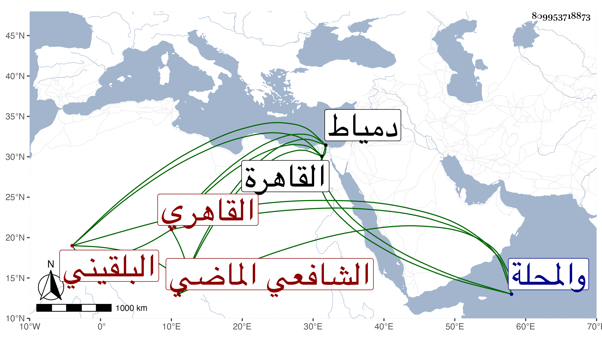

0902Sakhawi.DawLamic.ITO20230111-ara1.EIS1600.809953718873
Biography ID: 809953718873
98
محمد بن عبد العزيز بن محمد بن مظفر بن نصير بن صلح البهاء أبو البقاء ابن العز البلقيني الأصل القاهري الشافعي الماضي أبوه وولده عبد العزيز ويعرف بابن عز الدين ويلقب شفترا . ولد في رجب سنة خمس وتسعين وسبعمائة بالقاهرة ونشأ بها فحفظ القرآن والمنهاج الفرعي والأصلي وألفية ابن ملك ، وعرض على جماعة منهم العز بن جماعة والجلال البلقيني والطبقة وأحضر على ابن أبي المجد معظم البخاري والختم منه على التنوخي والعراقي والهيثمي ، واشتغل يسيرا على أبيه في الفقه وأصوله والحديث والنحو والفرائض وكان علامة فيها وزعم أنه أذن له في الإفتاء والتدريس ، وأجاز له أبو هريرة بن الذهبي وأبو الخير بن العلائي وآخرون ، وحج في سنة تسع عشرة ودخل دمياط والمحلة ونحوهما ، وناب في القضاء عن الجلال البلقيني فمن بعده وترقب ولاية القضاء الأكبر وربما ذكر لذلك خصوصا في الأيام المتأخرة وخوطب به وكاد أمره أن يتم في أيام الظاهر خشقدم ودرس بمدرسة سودون من زادة بالتبانة عقب أبيه وكذا ولي بعده إفتاء دار العدل واشتهر بالثروة الزائدة التي جرها إليه الميراث من قبل أبيه وغيره مع التقتير الزائد والإزراء في ملبسه وإفراطه في البأو والتعاظم لا لموجب حتى أن الديمي سأله في المجيء للكاملية ليحدث بصحيح البخاري فأجاب بتكلف زائد ولما حضر خاطبه بشيخ الإسلام وقرأ بين يديه مع جماعة من الشيوخ المجلس الأول ثم أنف من إشراك غيره معه في الأسماع وانقطع عن الحضور إلا إن كان بمفرده ولو لم يمتنع كان أجمل في حقه وأجل ، وقد حدث باليسير جدا قرأت عليه جزءا وقرأ عليه غير واحد من الطلبة وليم من قرأ عليه بعد توعكه في سنة ست وسبعين لكونه كما قيل في حيز المختلطين ، وكان قد امتحن في أوائل سلطنة الظاهر جقمق في ذي القعدة سنة اثنتين وأربعين بسبب جارية أفسدها عبده جر ذلك إلى إهانته وضربه وإشهاره على حمار وفي عنقه باشه وبذل ألف دينار وأكثر ولولا تلطف شيخنا في أمره لكان الأمر أشد . وآل أمره إلى عزله من نيابة الحكم ، ولزم بيته حتى مات في يوم الخميس عاشر شعبان سنة ثمان وسبعين بعد توعك طويل يزيد على خمس سنين بحيث أقعد وصلى عليه بمصلى باب النصر ثم دفن في تربة سعيد السعداء رحمه الله وعفا عنه .
